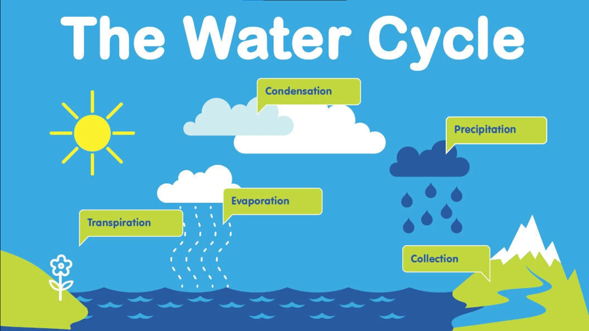

Water is essential for life, and it is important to understand how it
is distributed on Earth. The vast majority of water on Earth is in the
oceans, which account for about 97% of the total. The remaining 3% is
freshwater, which is found in glaciers, ice caps, groundwater, lakes,
rivers, and the atmosphere. Freshwater Freshwater is unevenly
distributed on Earth. About 69% of freshwater is locked up in glaciers
and ice caps, with most of the rest found in groundwater. Only a small
fraction of freshwater is found in surface water bodies, such as lakes
and rivers. Surf ace water Surface water is the most accessible form
of freshwater, but it is also the most vulnerable to pollution and
overuse. Rivers and lakes provide drinking water for billions of
people, and they are also important for irrigation, transportation,
and recreation. Groundwater Groundwater is water that is stored
underground in aquifers. Aquifers are porous rock formations that can
hold large amounts of water. Groundwater is a valuable source of
drinking water, and it is also used for irrigation and industrial
purposes. The water cycle The water cycle is the process by which
water moves around the Earth. It is a continuous process that involves
evaporation, condensation, precipitation, and runoff. Evaporation is
the process by which water changes from a liquid to a gas. When water
evaporates, it enters the atmosphere as water vapor. Condensation is
the process by which water vapor changes back into a liquid. When
water vapor condenses, it forms clouds. Precipitation is the process
by which water falls from the sky as rain, snow, sleet, or hail.
Runoff is the process by which water flows over the land surface and
into rivers, lakes, and oceans. Climate change and water Climate
change is having a significant impact on the distribution of water on
Earth. Global warming is causing sea levels to rise, and it is also
leading to more extreme weather events, such as droughts and floods.
These changes are disrupting the water cycle and making it more
difficult to manage water resources. Conclusion The distribution of
water on Earth is uneven and becoming increasingly unpredictable due
to climate change. It is important to understand how water is
distributed and how it is being affected by climate change so that we
can manage water resources sustainably. Here are some additional facts
about the distribution of water on Earth: • About 1.386 billion cubic
kilometers (333 million cubic miles) of water exists on Earth. • Only
2.5% of Earth's water is freshwater. • Of the freshwater on Earth,
68.7% is in glaciers and ice caps, 30.1% is in groundwater, and 1.2%
is in surface water bodies. • The remaining freshwater is found in the
atmosphere and in living organisms. • The average human uses about 150
liters (40 gallons) of water per day. Water is a precious resource,
and it is important to use it wisely. We can all do our part to
conserve water by taking shorter showers, fixing leaky faucets, and
watering our lawns less often.